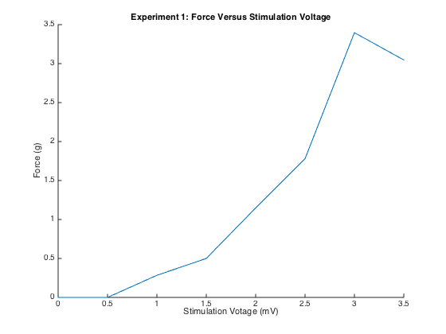
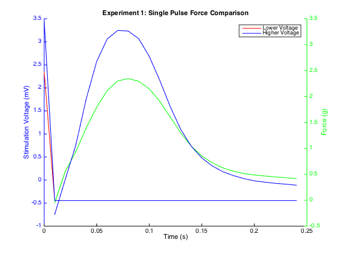
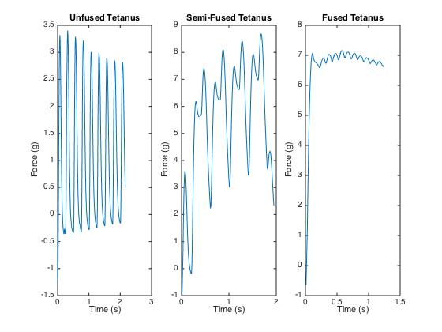
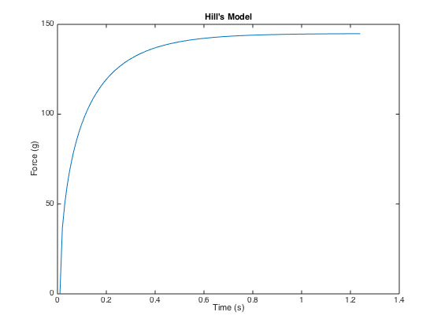
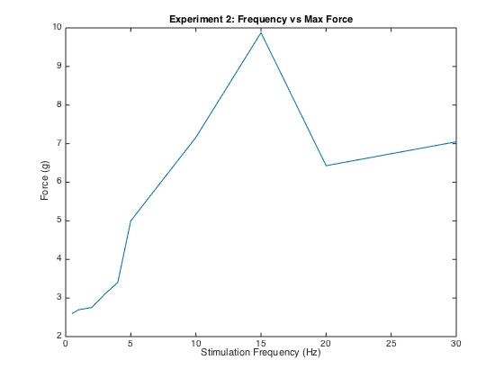
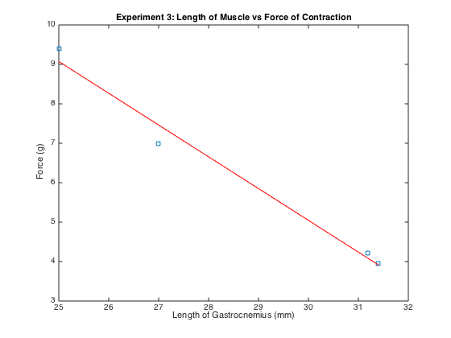

Contents
% % Manually pick file %[Name, Path] = uigetfile('.xls'); %filename = strcat(Path, Name); clc, clear all, close all % Set current working directory currentFolder = pwd;
Experiment 1 Data
Plot max force versus stimulation force
figure % Import file filename = strcat(currentFolder,'/Lab Data/Single Pulse/recordedPeaks.csv'); Exp1 = csvread(filename, 1, 0); % Store time, force and voltage from experiment 1 dataset V1 = Exp1(:, 1); F1 = Exp1(:, 2); disp(['Max Force = ' num2str(max(F1))]) % Plot peaks for first experiment hold all, plot(V1, F1) title('Experiment 1: Force Versus Stimulation Voltage') xlabel('Stimulation Votage (mV)'), ylabel('Force (g)') figure, hold all % Import file filename = strcat(currentFolder,'/Lab Data/Single Pulse/singlepulse',num2str(1),'.xls'); Exp1_1 = xlsread(filename); % Store time, force and voltage from experiment 1 dataset with truncated values tF_1 = Exp1_1(2:25, 1); F1_1 = Exp1_1(2:25, 2); tV_1 = Exp1_1(1:25, 1); V1_1 = Exp1_1(1:25, 3); % Import Next file filename = strcat(currentFolder,'/Lab Data/Single Pulse/singlepulse',num2str(5),'.xls'); Exp1_5 = xlsread(filename); tF_5 = Exp1_5(2:25, 1); F1_5 = Exp1_5(2:25, 2); tV_5 = Exp1_5(1:25, 1); V1_5 = Exp1_5(1:25, 3); % Plot peaks for the force generated line(tF_1, F1_1,'LineStyle','-', 'Marker', 'none', 'Color', 'g') line(tF_5, F1_5,'LineStyle','-', 'Marker', 'none', 'Color', 'b') % Comment out to make it pre-Matlab R2014B compliant ax1 = gca; % get current axes ax1.YColor = 'b'; set(ax1, 'xtickLabel', ''); ylabel('Stimulation Voltage (mV)') ax1_pos = ax1.Position; % position of first axes ax2 = axes('Position',ax1_pos, 'XAxisLocation','bottom', 'YAxisLocation','right', 'XColor','k', 'YColor','g', 'Color', 'none'); line(tV_1, V1_1,'Parent',ax2,'LineStyle','-', 'Marker', 'none', 'Color', 'r') line(tV_5, V1_5,'Parent',ax2,'LineStyle','-', 'Marker', 'none', 'Color', 'b') title('Experiment 1: Single Pulse Force Comparison'), xlabel('Time (s)'), ylabel('Force (g)') legend('Lower Voltage', 'Higher Voltage')
Max Force = 3.397 
Experiment 2 Data
aveMax = 0; figure for k = 5:7 filename = strcat(currentFolder,'/Lab Data/Frequency Data/frequencydata',num2str(k),'.xls'); b2 = xlsread(filename); x = round(0.5*length(b2)); t2 = b2(2:x, 1); F2 = b2(2:x, 2); for j = 1:length(F2) x = 1; end subplot(1,3,k-4) % subplot(2,3,k-4) % subplot(2,1,1) plot(t2,F2); % subplot(2,3,k-1) % subplot(2,1,2) % axis([0,1,0,7]); if (k == 5) title('Unfused Tetanus') end if (k == 6) title('Semi-Fused Tetanus') end if (k == 7) title('Fused Tetanus') end xlabel('Time (s)'), ylabel('Force (g)') aveMax = aveMax + max(F2); end figure [P, Lse, Lce] = simplifiedHillsModel(31.15, t2); plot(t2,P); title('Hill''s Model') xlabel('Time (s)'), ylabel('Force (g)') % Find Maxes maxes = []; for k = 1:10 filename = strcat(currentFolder,'/Lab Data/Frequency Data/frequencydata',num2str(k),'.xls'); b2 = xlsread(filename); x = round(0.5*length(b2)); F2 = b2(2:x, 2); maxes = [maxes max(F2)]; end maxes(6) = 5; % aveMax = aveMax/8; % [P,Lse, Lce] = simplifiedHillsModel(F2, t2); % figure % plot(t2, P) 
Frequency vs Max Force of Contraction
hz = [0.5,1,2,3,4,5,10,15,20,30]; % max = [2.601, 2.697, 2.753, 3.101, 3.319, 9.133, 9.010, 9.876, 6.429, 7.042]; figure plot(hz, maxes) title('Experiment 2: Frequency vs Max Force') xlabel('Stimulation Frequency (Hz)'), ylabel('Force (g)')
Experiment 3: Length of Muscle vs Force of Contraction
L = [25, 27, 31.18, 31.4]; F = [9.388, 6.998, 4.215, 3.943]; figure linearCoef = polyfit(L,F,1); linearFit = polyval(linearCoef,L); plot(L,F,'s', L,linearFit,'r-') title('Experiment 3: Length of Muscle vs Force of Contraction') xlabel('Length of Gastrocnemius (mm)'), ylabel('Force (g)')